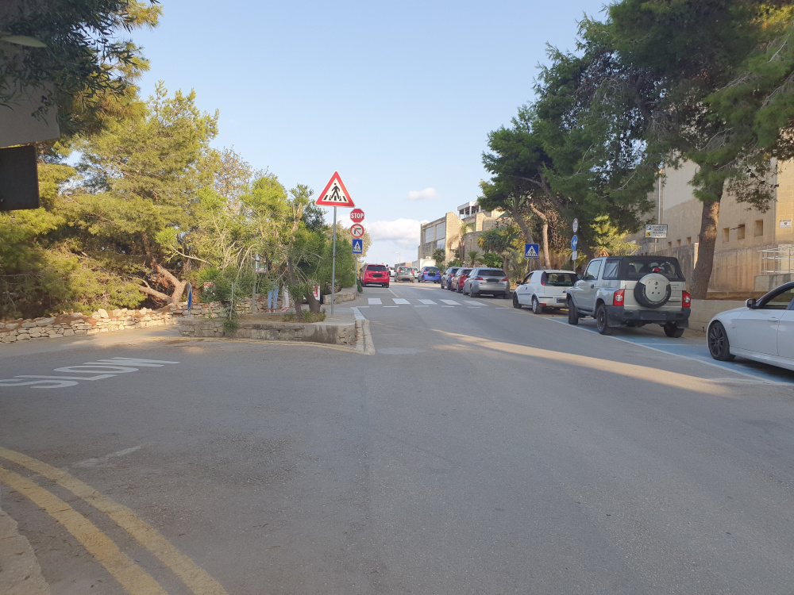
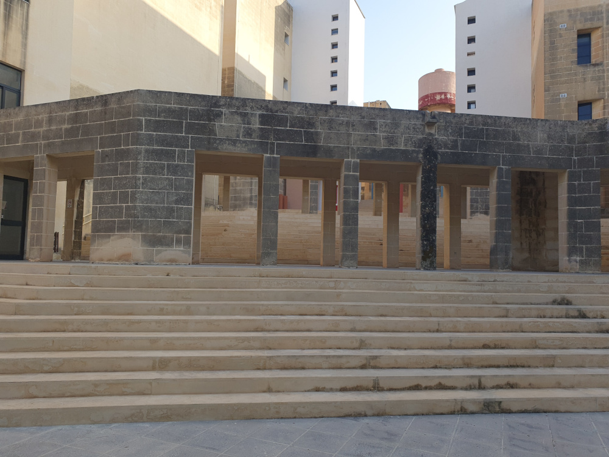
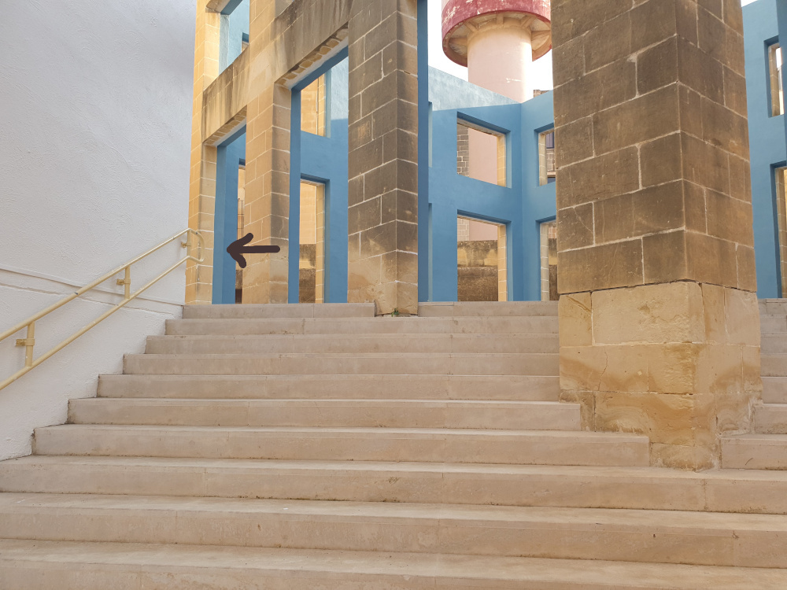
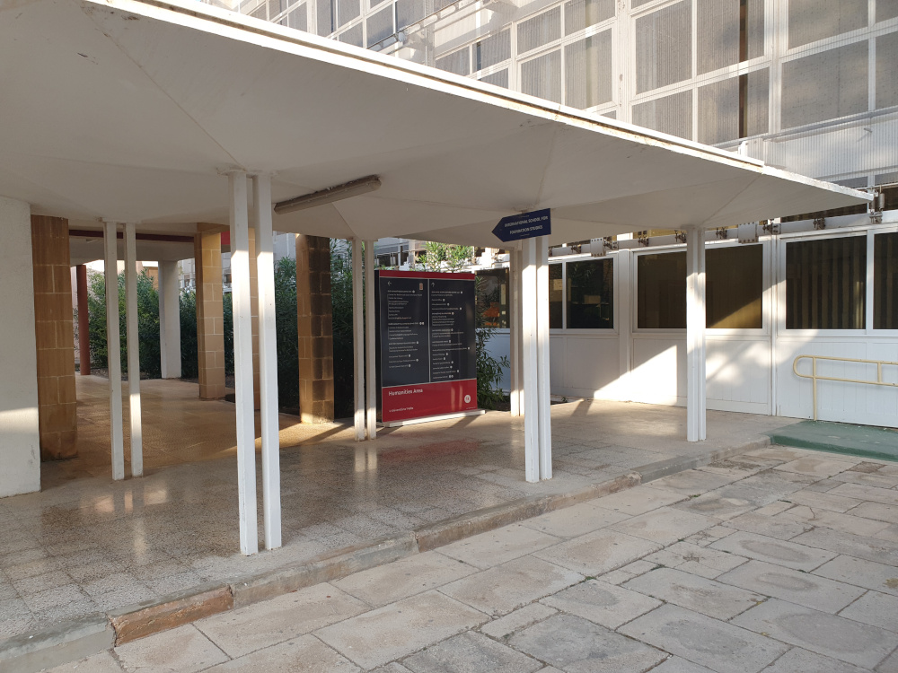
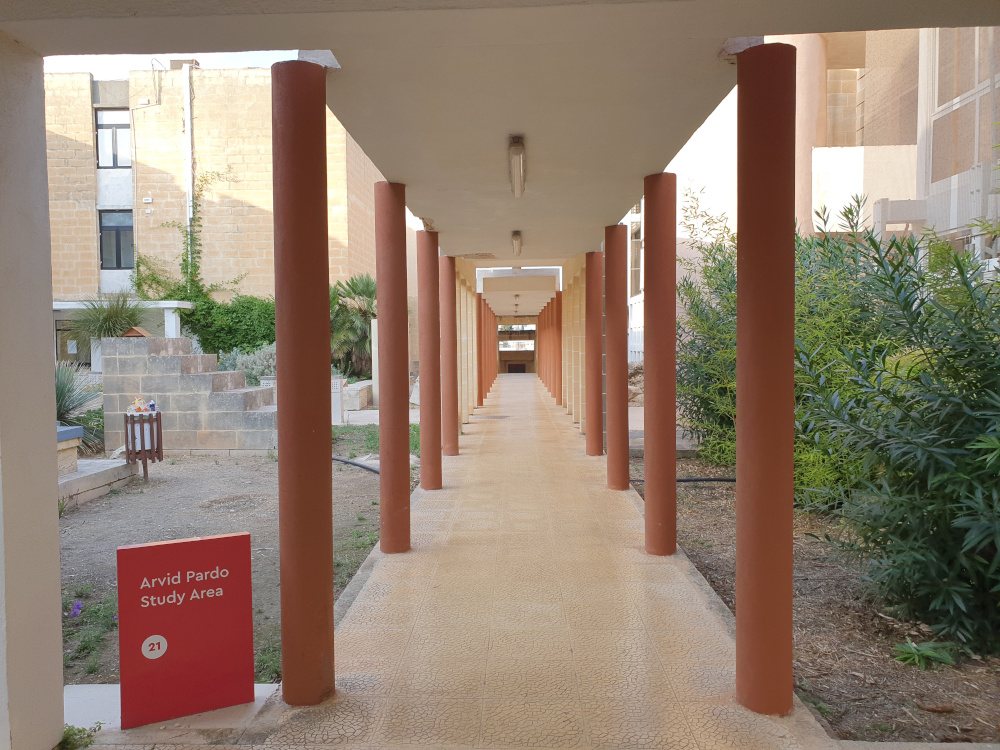
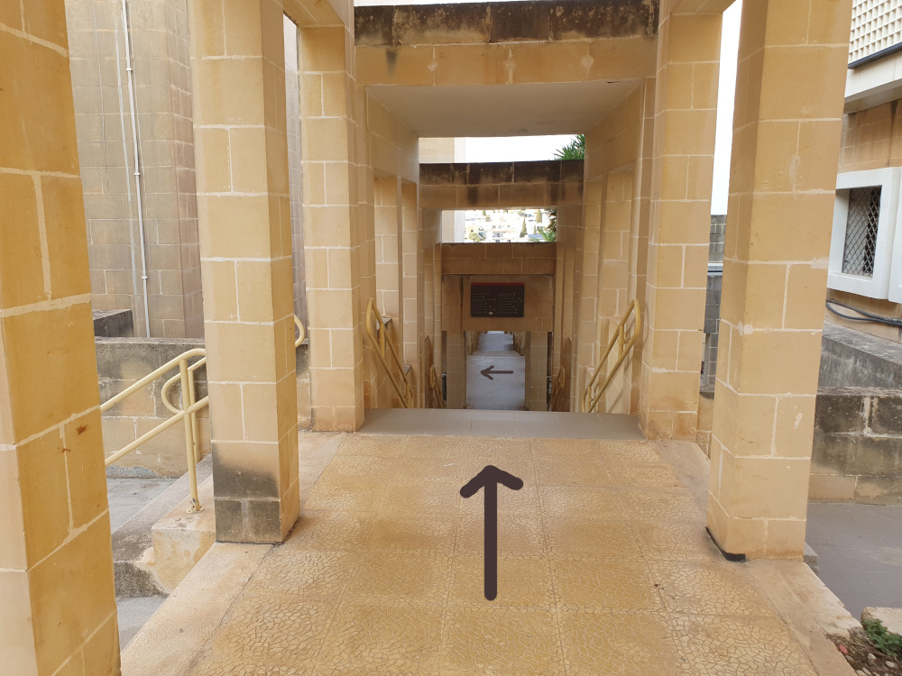
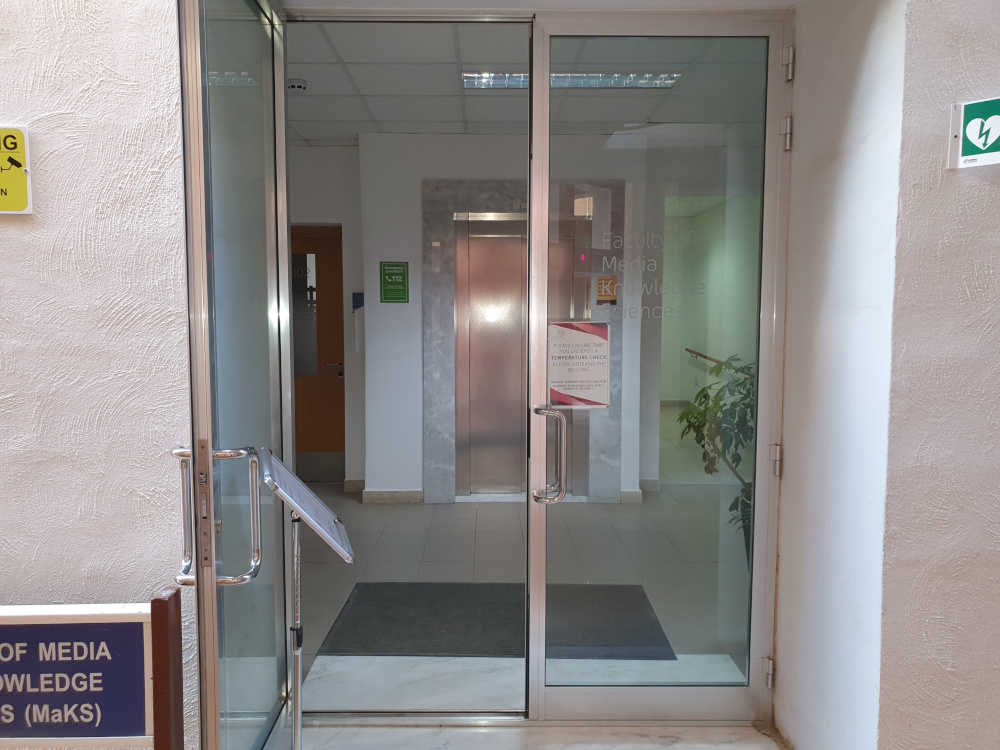
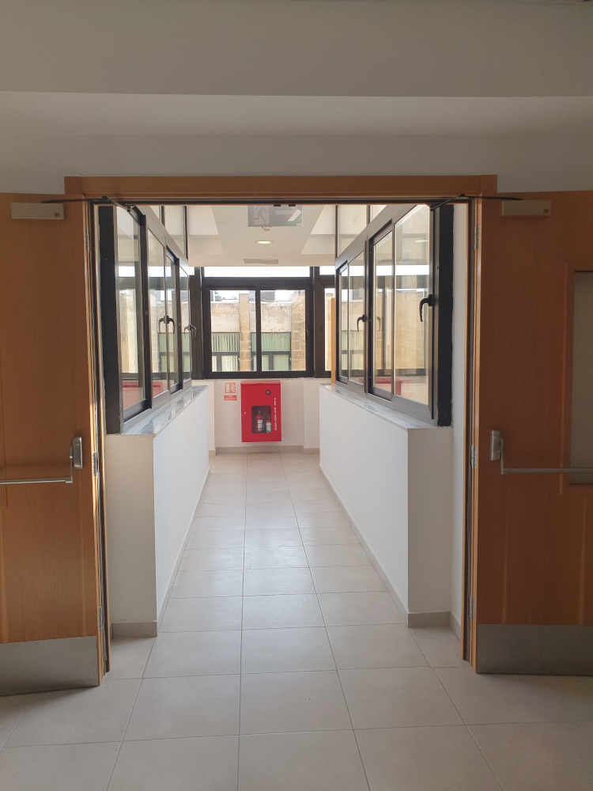
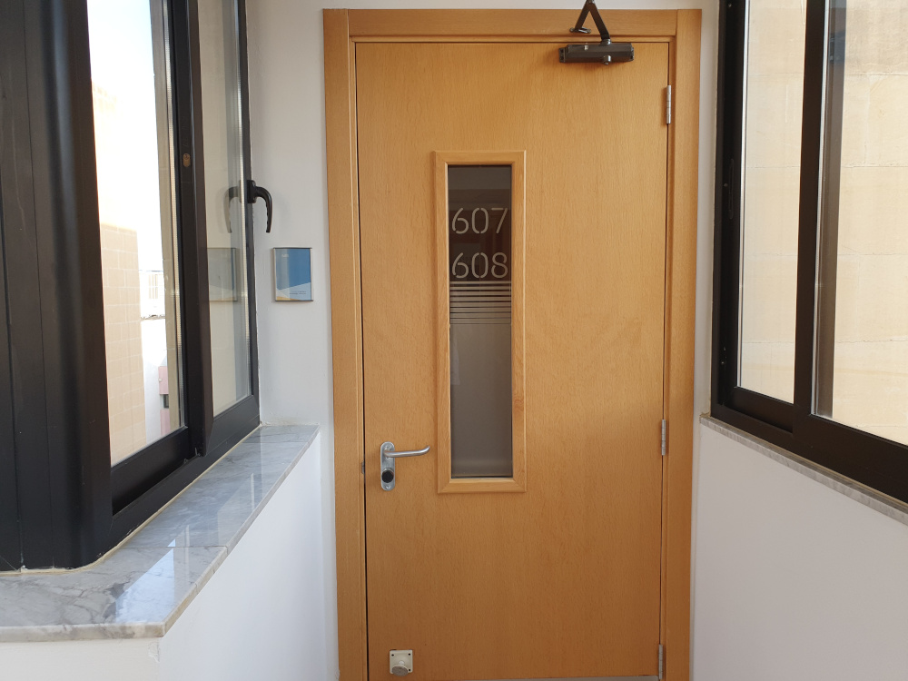

Room 608 Floor 6
Faculty of Media & Knowledge Sciences
University of Malta
Msida
GPS: 35.903111764058664, 14.483296541565805
Go to the part of the ring road near the Mediterranean Institute Farmhouse.
Turn towards the University and climb the steps.
Go around the corner at the blue structure.
Walk forward and you should see MaKS on your left.
Go to the left side of the library.
Walk down the walkway, down the steps, and turn left.
 Walk forward and you should see MaKS on your right.
As soon as you enter MaKS you will see a lift. Either enter the lift and press 6 or use the stairs on the left and go to floor 6 (you are on floor 3).
Once at floor 6, exactly opposite the lift is a corridor leading to my office.
Go through the corridor and turn left.
The door number is 608. Password is 'pineapple'.